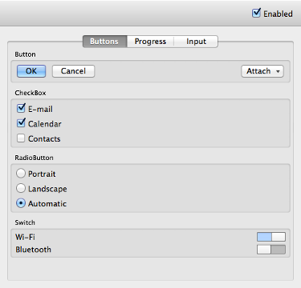
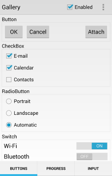

Qt Quick Controls 1 - Gallery
A collection of components for a classic desktop-style UI.
Warning: The Qt Quick Controls 1 module is deprecated since Qt 5.12. Use the latest Qt Quick Controls module instead.
|
 macOS |
 Android - Nexus 5 |
This example project demonstrates the various UI components provided by Qt Quick Controls 1.
Running the Example
To run the example from Qt Creator, open the Welcome mode and select the example from Examples. For more information, visit Building and Running an Example.